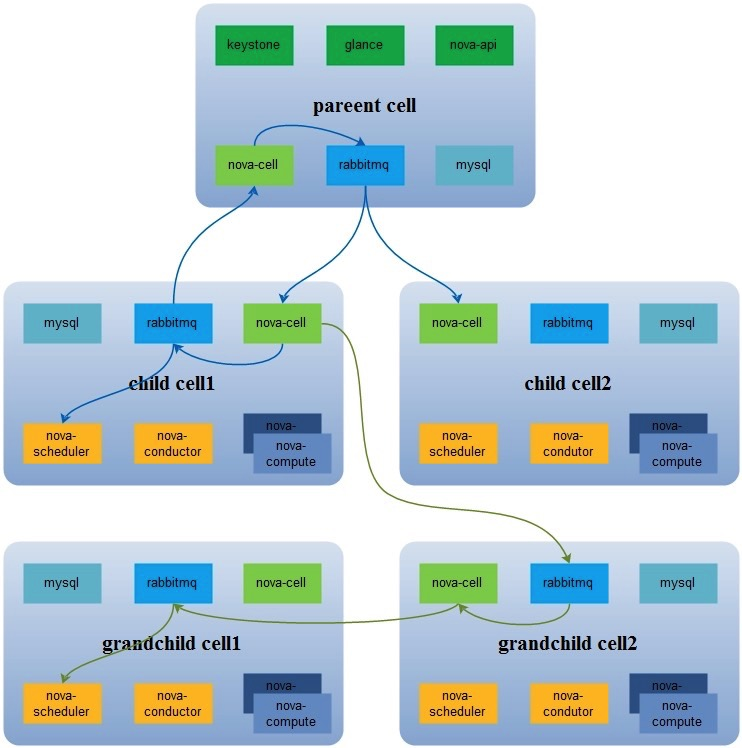
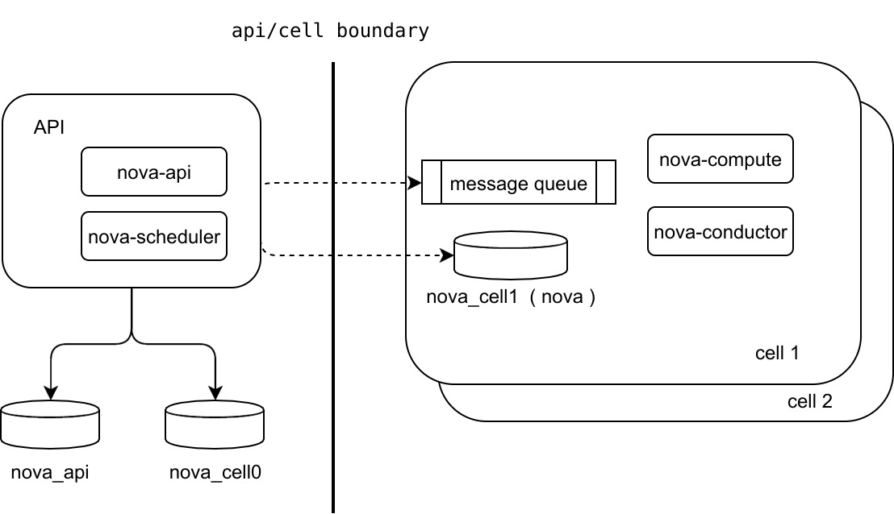

现在 ，OpenStack 在控制平面上的性能瓶颈主要在 Message Queue 和 Database 。 尤其是 Message Queue , 随着计算节点的增加 ， 性能变的越来越差 。 为了应对这种情况 ， Nova 很早之前提出来 nova-cell ( 以下以 cellv1 代替 ) 的解决方案 。 目的是在把大的 OpenStack 集群分成小的单元 ， 每个单元有自己的 Message Queue 和 Database。 以此来解决规模增加时引起的性能问题 。 而且不会向 Region 那样 ， 把各个集群独立运行 。 在 cell 里面 ，Keystone、Neutron、Cinder、Glance 等资源还是共享的 。
cell v1
cellv1 最初的想法很好 ， 但是局限于早期 nova 的架构 ， 硬生生的加个 nova-cell 服务来在各个 cell 间传递消息 ， 使得架构更加复杂 。 以下是 cellv1 的架构
cell v1 的问题在于 ：
- 一直以来 ，cell v1 被标记为实验性质
- 相关的测试很少 ， 而且也没有 v1 + neutron 的测试
- 现在来说功能已经冻结 ， 不会加入新的功能
- 不严重的 Bug 根本不会去修复
- 使用案例很少 。 现在经常提到的使用案例也只有 CERN（ 欧洲原子能研究中心 ）。 一般规模下 ， 完全没有必要搭建 cell v1
所以 ， 现在进行部署的话 ， 如果用 cell, 就尽量使用 cell v2 吧 。
cell v2
cell v2 自 Newton 版本引入 ，Ocata 版本变为必要组件 。 以后默认部署都会初始化一个单 cell 的架构 。
cell v2 的架构图如下 ， 看着比 cell v1 清爽不少 。
从架构图上 ， 可以看到 ：
- api 和 cell 有了明显的边界 。 api 层面只需要数据库 ， 不需要 Message Queue。
- nova-api 现在依赖 nova_api 和 nova_cell0 两个数据库 。
- nova-scheduler 服务只需要在 api 层面上安装 ，cell 不需要参数调度 。 这样实现了一次调度就可以确定到具体在哪个 cell 的哪台机器上启动
- 这里其实依赖 placement 服务 , 以后的文章会提到
- cell 里面只需要安装 nova-compute 和 nova-conductor 服务 ， 和其依赖的 DB 和 MQ
- 所有的 cell 变成一个扁平架构 。 比之前的多层父子架构要简化很多 。
- api 上面服务会直接连接 cell 的 MQ 和 DB, 所以不需要类似 nova-cell 这样子的额外服务存在 。 性能上也会有及大的提升
nova_api & nova_cell0
自 Newton 版本 ，nova 就一直拆分 nova 数据库 ， 为 cell v2 做准备 。 把一些全局数据表从 nova 库搬到了 nova_api, 下面是现在 nova_api 里面的所有表 。
+------------------------------+ +------------------------------+ | Tables_in_nova_api | | Tables_in_nova_api | +------------------------------+ +------------------------------+ | aggregate_hosts | | inventories | | aggregate_metadata | | key_pairs | | aggregates | | migrate_version | | allocations | | placement_aggregates | | build_requests | | project_user_quotas | | cell_mappings | | quota_classes | | flavor_extra_specs | | quota_usages | | flavor_projects | | quotas | | flavors | | request_specs | | host_mappings | | reservations | | instance_group_member | | resource_classes | | instance_group_policy | | resource_provider_aggregates | | instance_groups | | resource_providers | | instance_mappings | | | +------------------------------+ +------------------------------+
可以看到像 flavor, instance groups, quota 这些表已经迁移了过来 。
nova_cell0 数据库的 schema 和 nova 是一样的 ， 他存在的只要用途是 ： 当 instance 调度失败时 ， instance 的信息不属于任何一个 cell, 所以放到 cell0 上面 。 因此里面的数据并不是太重要 。
cell 流程
api/cell boundary
+
nova show <uuid> |
| |
v 3 |
nova-api+-------------------->cell-db
+ + |
| +----+ |
1| | 2 | 1. Determine which cell the instance is in
v v | 2. Get db connection for cell
instance_mapping cell_mapping | 3. Query cell db for data
+
当想要获取一个机器的详细信息时 :
- nova-api 先从 instance_mappings 表拿到 instance 的 cell_id
- 再从 cell_mappings 表拿到所在 cell 的 DB connection
- 直接连接 cell 的 DB 拿到机器的详细信息
api/cell boundary
+
nova reboot <uuid> |
+ |
| |
v 3 |
nova-api+-------------------->cell-mq+----->compute
+ + |
| +---+ |
1| | 2 | 1. Determine which cell the instance is in
v v | 2. Get mq connection for cell
instance_mapping cell_mapping | 3. Send RPC message to compute
+
当要重启一台机器时 ：
- nova-api 先从 instance_mappings 表里拿到 instance 所在的 cell_id
- 从 cell_mappings 里拿到所在 cell 的 message queue 连接
- nova-api 直接给 mq 的相关队列发重启机器的消息
api/cell boundary
+
nova boot ... |
+ 3 |
| +---------------------->cell-db
v + 4 |
nova-api+-------------------->cell-mq+->conductor+->compute
+ + |
| +-------------+ |
2| 1 | |
v | | 1. Schedule the instance
instance_mapping | | 2. Record which cell the instance was scheduled to
| + 3. Create instance record
v 4. Send RPC message to conductor to build
scheduling
当新建机器时 :
- nova-api 接到用户的请求信息 ， 先转发到 nova-scheduler 进行调度 ， nova-scheduler 通过 placement service, 直接确定分配到哪台机器上
- nova-api 把 instance 的信息存入 instance_mappings 表
- nova-api 把机器信息存到目标 cell 的 database
- nova-api 给 cell 的 message queue 的相关队列发消息 ， 启动机器
Cell v2 的优点
- 数据库和消息队列作为 nova 的一等公民 。
- 在 cell 的数据库里没有冗余数据 ， 所有共享数据都在 nova-api 中
- 全局数据和 cell 数据有一条清晰的界线
- 非 cell 用户很容易的就可以迁移到 cell v2 上面 。 不需要更改现在的部署架构
- cell v1 的用户也可以迁移到 cell v2 上 。 只要手动建立起所有的 mapping, 关掉现在存在的 nova-cell 服务 ， 清掉最上层 cell 的数据库 。 但是最上层 cell 本质上和其它 cell 是不同的 。 所以需要调整架构
- 增减 cell 变的十分简单 ， 而且在把某个 cell 加入之前 ， 可以在其它环境进行测试
Cell v2 相关命令
因为 cell v2 完全靠 database 的操作为建立 ， 所以也没有相关的 api 接口 。 主要靠 nova-manage cell_v2 命令 。 详细说明参见 [1]
nova-manage cell_v2
create_cell
delete_cell
list_cells
map_cell0
discover_hosts
simple_cell_setup
map_cell_and_hosts
map_instances
verify_instance
其它
计算节点自动发现
上面提到了现在 nova-compute 服务上线后 ， 不会自动加到 nova-api 的 host_mappings 里面 ， 也就不会加到 nova-scheduler 的调度中 。 需要手动运行 nova-manage cell_v2 discover_hosts 命令 。 这显示略显繁琐 。
在小型一些的环境上 ， 推荐打开自动发现功能 ， 就不用手动跑命令了 。
[scheduler] discover_hosts_in_cells_interval=-1 #This value controls how often (in seconds) the scheduler should attempt #to discover new hosts that have been added to cells. If negative (the #default), no automatic discovery will occur.
性能分析
为了拿到 instance 的详细信息 ， 需要查询 nova_api 数据库 ， 相比之前要多查询一次数据库 ( 虽然是有三个表 ， 但是可以用多表连接查询 ， 一次就可以拿到所有的结果 )。 但是一来数据相当少 ， 而且很容易加上一层 cache, 并不会对性造成什么影响 。
Kolla 实现
现在 Kolla 已经支持自动部署一个基本的 cell 环境 ， 而且支持从没有 cell 的 Newton 升级到有 cell 的 Ocata 版本 。
REF
| [1] | https://docs.openstack.org/developer/nova/man/nova-manage.html#nova-cells-v2 |
| [2] | Presentation that Andrew Laski gave at the Austin (Newton) summit |
| [3] | https://docs.openstack.org/developer/nova/cells.html |
| [4] | Flow chart |
| [5] | https://wiki.openstack.org/wiki/Nova-Cells-v2 |
| [6] | https://www.ustack.com/news/what-is-nova-cells-v2/ |
| [7] | http://www.cnblogs.com/wanglm/articles/5749813.html |
Comments